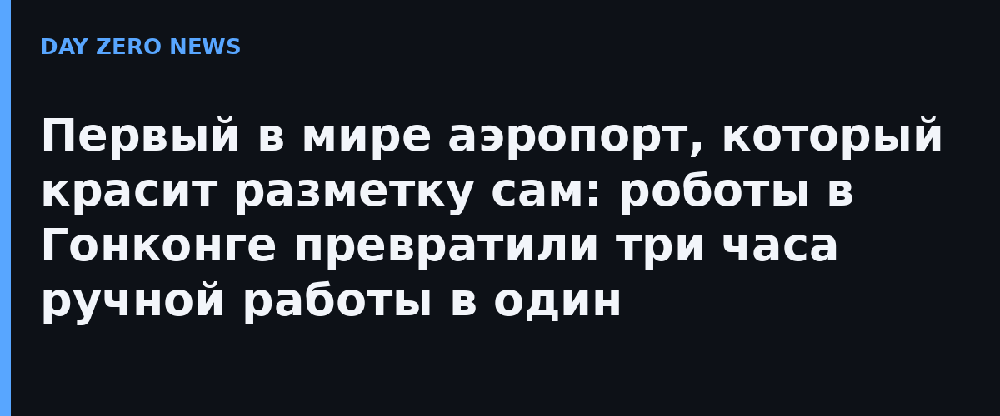

Аэропорт Гонконга (HKG) ввёл в строй роботов для автоматической перекраски разметки ВПП — по заявлению Управления аэропортом Гонконга (Airport Authority Hong Kong), это первый такой случай в мире. Глава операционного подразделения управления Цюй Сяочжун, по данным местных изданий, сообщил: раньше ручная перекраска осевых линий одной полосы занимала около трёх часов, роботы справляются за час — время работ сокращено примерно на две трети, плюс экономия около 400 тысяч гонконгских долларов (порядка $51 000) на краске ежегодно. Разметку обновляют с частотой от раза в неделю до раза в полгода.
Роботов разработали совместно с шэньчжэньской компанией FJ Dynamics: машины с двумя распылителями наносят прямые линии, с одним соплом — точную работу на поворотах. Позиционирование — спутниковое, с коррекцией RTK сразу по четырём системам: GPS, ГЛОНАСС, Galileo и BeiDou, что даёт точность нанесения до сантиметра. На борту — камеры высокого разрешения и LiDAR, с автоматической остановкой при обнаружении препятствия. На боевую полосу роботы вышли в сентябре, после девяти месяцев испытаний.
Перекраска разметки — тяжёлая ночная работа в короткие окна технического обслуживания, и людей на неё давно не хватало. Роботы забрали рутину, но часть операций персонал по-прежнему выполняет вручную: управление рассчитывает на долгосрочный гибридный формат. Автоматизация на полосах Гонконга и раньше не ограничивалась одним экспериментом — там уже работают подметальные машины, техника для удаления резины и роботы-газонокосилки.
Отдельного пресс-релиза на сайте Управления аэропортом не публиковали: сведения подтверждены комментариями руководства аэропорта местным СМИ и материалом South China Morning Post. Пока одни обсуждают, заменят ли роботы офисных сотрудников, аэродромная техника тихо закрывает куда более дефицитную нишу — ночных маляров.